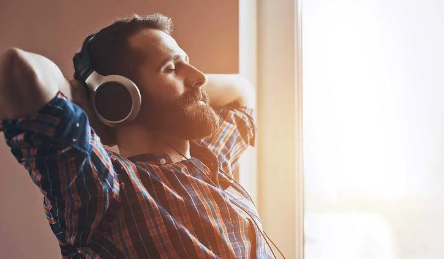
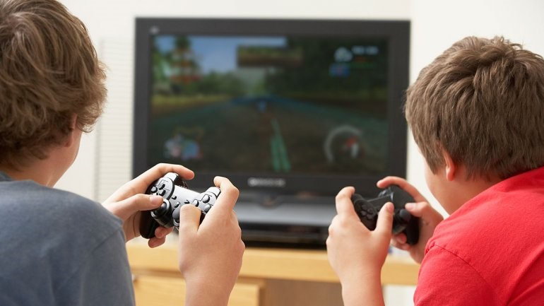
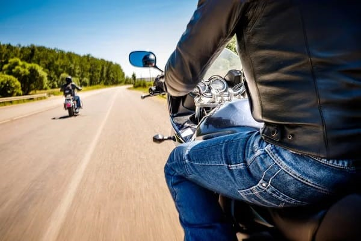
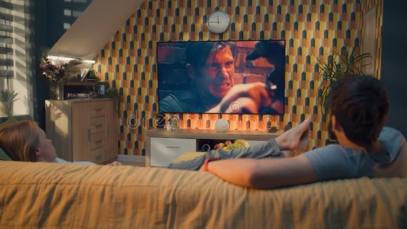

|
|
🎵 Algunos de mis pasatiempos favoritos son escuchar música. No importa en qué estado de ánimo me encuentre,
siempre escucho música porque me relaja, me distrae y me motiva en mi día a día. Me gusta escuchar diferentes géneros musicales
dependiendo del momento y de cómo me sienta.
⚽ También juego fútbol. Casi todos los días en las noches voy con mis amigos y conocidos
a las canchas de mi colonia para jugar partidos apostados. Me gusta mucho este deporte porque me ayuda a distraerme y convivir con otras personas.
Aunque no estoy en el mejor estado físico, eso no me impide jugar, divertirme y pasarla bien con mis amigos.
🎮 Me encanta jugar videojuegos en mis tiempos libres. Soy muy bueno en juegos de mundo abierto, de disparos, de inteligencia y casuales.
Disfruto mucho jugar en línea con mis amigos, ya que jugar solo no me llama mucho la atención y me termina aburriendo. Los videojuegos
también me ayudan a entretenerme y a liberar el estrés después de un día cansado.
🏍️ Cuando estoy aburrido me gusta salir a manejar moto. A veces hacemos rodadas con mis amigos, salimos a comer y disfrutamos del tiempo juntos.
Me gustan mucho las motos porque me hacen sentir tranquilo y me gusta conocer nuevos lugares mientras conduzco.
💻 Otro pasatiempo que disfruto bastante es ver videos de mecánica, tecnología y programación. Estos temas me llaman mucho la atención porque me motivan
a aprender cosas nuevas y a mejorar mis conocimientos. Me gusta investigar y tratar de aplicar lo que aprendo en mi vida diaria o en proyectos personales.
🎬🍿 Además, en ocasiones también disfruto pasar tiempo descansando, viendo películas o hablando con mis amigos por internet. Considero que mis pasatiempos me ayudan
a mantenerme entretenido y a despejar mi mente de las preocupaciones diarias.
📱🌐 Un pasatiempo un poco malo que tengo es pasar demasiado tiempo viendo redes sociales. Aunque a veces no quiera, termino quedándome enganchado viendo videos o fotos durante
mucho tiempo. Es algo que quiero disminuir para poder aprovechar mejor mi tiempo y enfocarme más en actividades productivas e importantes para mi futuro.



